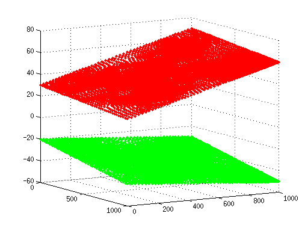
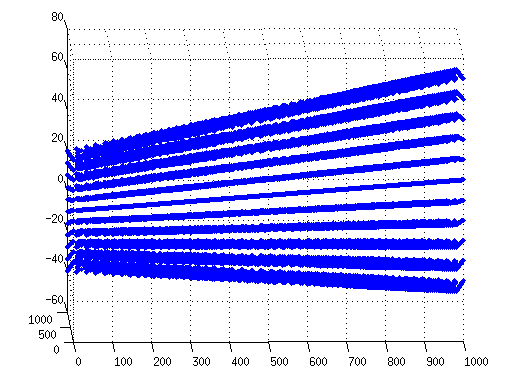
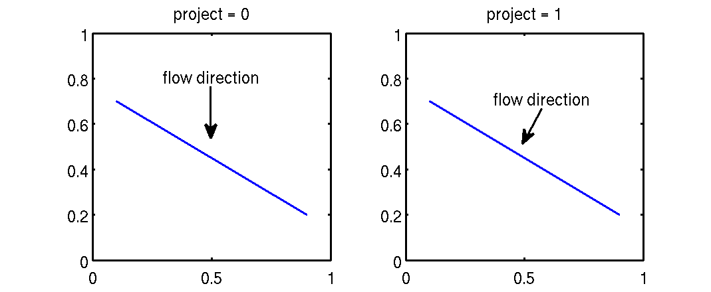
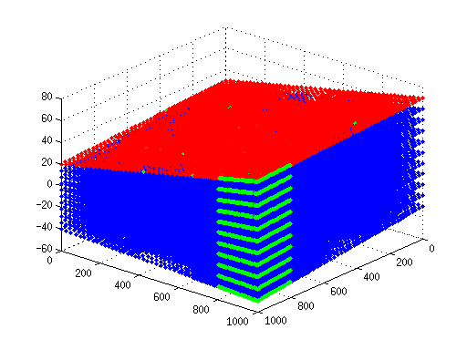
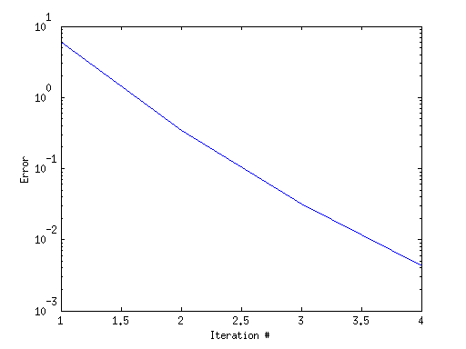
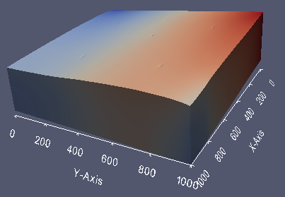

3D Flow problem (hexahedral elements)
| main | Tutorials | Functions | website |
This example shows how to solve the groundwater flow equation using hexahedral elements. Here we choose quadratic elements however the procedure will be almost identical for linear elements. We also show how to deal with non-linear unconfine problems using the moving mesh approach. Finally we will show how to define general head boundary conditions and lateral flow boundaries.
Contents
Create 3D mesh
The domain of the problem is given in a previous tutorial. In this example we will use the same mesh that was generated for the 2D flow problem. However in this example the mesh will be extruded in the z direction.
Here we simply read the mesh from the Simple_quad.msh file.
[p_2d MSH_2d]=read_2D_Gmsh('Simple_quad');
Reading points... Reading Elements...
Next we define the bottom and top elevation of the domain as inline functions of the x and y coordinates
top_func = @(x,y)30 - 0.01.*x + 0.04.*y; bot_func = @(x,y)-20 - 0.02.*x - 0.01.*y;
and we use them to compute the bottom and top elevations of the mesh nodes.
p_top = top_func(p_2d(:,1), p_2d(:,2)); p_bot = bot_func(p_2d(:,1), p_2d(:,2));
Finaly we plot them to make sure we have made the correct calculations
plot3(p_2d(:,1), p_2d(:,2), p_top, '.r') hold on plot3(p_2d(:,1), p_2d(:,2), p_bot, '.g') view(60, 10) grid on
To extrude the mesh in the z direction we need to define the number of layers and the distribution of layers. Here we will use a simple uniform distribution of 5 layers. For more advance options see the example of the Centerfor2points function.
The simplest way to define uniform distribution is with the help of the linspace function. The following line does two things. First the size of variable t determines the number of layers. The size is equal to 6 therefore after the extrude operation there will be 5 layers of 3D elements. The second thing is that it defines the distribution of the layers. For every mesh node it will scale the elevations of 6 nodes according to the distribution in t.
t = linspace(0,1,6);
Finally we extrude the mesh
[p MSH]=extrude_mesh(p_2d, MSH_2d, p_top, p_bot, t, 'quadratic');
For quick review of the result we can plot the nodes just to make sure that we have the desired outcome. In matlab we cannot plot quadratic hexahedral elements so we plot just the nodes.
plot3(p(:,1), p(:,2), p(:,3),'.')
view(91,-6);
 Hydraulic conductivity
In this example we will use an heterogenous hydraulic conductivity field which can be found in the DATA folder. The units of the field are m/day
load Kfield3D;
This is just a hypothetical example and we use a hypothetical grid that covers the domain
x_k=linspace(0,1000,size(Kfield,2)); y_k=linspace(0,1000,size(Kfield,1)); z_k=linspace(-51,80,size(Kfield,3));
and then we interpolate the hydraulic conductivity to mesh nodes
Kfield = Kfield/40; Kx=interp3(x_k,y_k,z_k,Kfield,p(:,1),p(:,2),p(:,3));
and just for illustration lets define an anisotropic aquifer.
K = [Kx Kx/10 Kx/100];
Boundary conditions
Our example has two types of boundary conditions. General head boundary on the left, constant flux from the top and two lateral fluxes on the top right corner.
For the general head boundary conditions we will find the mesh node ids of the most left boundary which have zero x coordinate.
id=find(abs(p(:,1)<1));
We assing head value equal to the initial elevation and conductance a relatively small value equal to 50 m^3/day.
GHB=[id top_func(p(id,1),p(id,2)) 50*ones(length(id),1)];
Because we don't have any constant head boundary conditions we need to define an empty variable
CH = [];
Flux boundary conditions
WELLS
For the flow conditions we make a distinction between those that are applied directly to nodes and those that are applied to elements.
Let's first deal we those applied to nodes which are somewhat easier to assign. Typical example are the wells. In our example we have 5 wells with coordinates
xw=[255 750 413 758 261]; yw=[802 738 514 293 192];
We also arbitarily set the top of the well screen 10 m bellow the initial water table, which is the top layer and the screen lenght equal to 30 m.
We define an empty variable that will hold the well rates.
FLUX_point = [];
The following loop does the folowing. For each well computes the distance between the well and the mesh nodes. However when we created the quadrilateral mesh we didnt force the mesh to use the wells as mesh nodes. Therefore we will assume that the wells correspond to the closest nodes. First we identify the minimum distance between each well and the mesh nodes and select all nodes that their distance is equal to the minimum. The number of selected nodes must be equal to the number of layers, in case of linear elements, or 2*Nlay - 1 in case of quadratic elements. In our case we defined 6 layers therefore for each well we should select 11 nodes.
Next we compute the elevation of the top and bottom of the screen and identify which nodes lay within the well screen and finally assign a well rate of 100 m^3/day for each well, i.e. we divide the well pumping rate by the number of mesh nodes that lay between the well screen.
for i = 1:length(xw) dst = sqrt((xw(i) - p(:,1)).^2 + (yw(i) - p(:,2)).^2); id = find(dst < min(dst)+0.1); z_top = p(id(1), 3) - 10; z_bot = z_top - 30; id_nd = find(p(id, 3) >= z_bot & p(id,3) <= z_top); FLUX_point = [FLUX_point; id(id_nd) -100/length(id_nd)*ones(length(id_nd),1)]; end
DIFFUSE RECHARGE
Next we define the diffuse recharge from the top of the aquifer To do so we need to a structure with several fields that will be described in the following paragraphs.
First we need to identify the id of the elements associated with the top recharge. By examining the 2D dimensional elements of the mesh which are given in the 3rd row of the MSH variable
MSH(3,1).elem MSH(3,1).elem(1,1).type MSH(3,1).elem(2,1).type
ans =
2x1 struct array with fields:
type
id
ans =
quad
ans =
quad
we see that there are 2 rows which contain elements of type quad. This is because we extruded a quadrilateral mesh to form a hexahedral mesh. If we extrude a 2D triangular mesh this structure will have two rows with one of them with type triangle.
The second row of this structure contains the id of the top and bottom mesh which can be either quadrilateral or triangular and the first row contains the lateral boundaries, which are in any case quadrilaterals because the prism elements consist of two triangular faces on the top and bottom and 3 quadrilateral faces on the side.
The main conclusion from the above discussion is that the second row of the MSH(3,1).elem variable contains the elements of the top and bottop boundary and the second row the elements of the lateral boundaries. In addition the number of elements in MSH(3,1).elem(2,1).id should be always twice the number of elements of the 2D mesh MSH_2d(3,1).elem(1,1).id.
size(MSH(3,1).elem(2,1).id,1)
ans =
3592
size(MSH_2d(3,1).elem(1,1).id,1)
ans =
1796
Although we can identify the top or bottom elements by asking elements with z coordinates above or below a given value, there is a better way to to so by taking advantage the way the extrude function operates. In general the elements with node ids from 1 to size(p_2D,1) belong to the top layer
test = MSH(3,1).elem(2,1).id < size(p_2d,1); id_top = find(sum(test ,2) == 9);
The above two lines first test which elements have ids with id number less than the size of the 2D mesh nodes. The elements that all of their vertices satisfy the above condition belong to the top layer. (Each element has 9 vetrices because the element of the top side of the domain is quadratic quadrilateral)
Now that we have identify the elements associated with diffuse recharge and we need to create a structure with the following fields:
The element ids
FLUX(1,1).id = id_top;
The recharge values for each element. Note that the order of the values should correspnd to the order of ids if the recharge is heterogeneous
FLUX(1,1).val = 0.0008*ones(size(FLUX(1,1).id,1),1);
The dimension of the elements
FLUX(1,1).dim = 2;
The type pf the elements
FLUX(1,1).el_type = 'quad';
The element order
FLUX(1,1).el_order = 'quadratic_9';
This is the row id in MSH(3,1).elem
FLUX(1,1).id_el = 2;
LATERAL FLUXES
For the lateral boundaries we will do exactly as above yet we will add one more option. The first lateral flow boundary is described by the plane with x and y coordinates along the line (800, 1000) -- (1000, 1000) and any z. To identify the elements that satisfy this condition we will loop through the corner element nodes and test whether they satisfy this condition
clear test for k=1:4 test(:, k)=(p(MSH(3, 1).elem(1, 1).id(:, k), 1) > 799 & p(MSH(3, 1).elem(1, 1).id(:, k), 2) > 999); end
The elements that have all 4 corners satisfing the condition are associated with this flux boundary condition. Note that if the 4 corner nodes of the element satisfy the above condition then all the remaining 5 nodes will do as well.
FLUX(2,1).id = find(sum(test, 2) == 4); FLUX(2,1).val = -1e-2*ones(size(FLUX(2, 1).id, 1), 1); % we assign an arbitary value here FLUX(2,1).dim = 2; FLUX(2,1).el_type = 'quad'; FLUX(2,1).el_order = 'quadratic_9'; FLUX(2,1).id_el = 1;
This property is a new one. It simply states that the value in FLUX(2,1).val is applied over the actual area of the element regardless its orientation.
FLUX(2,1).project = 1;
The following plot explains graphically the difference between to two options. When project is equal to zero we assume that the direction of flow is vertical. When project is set equal to 1 then the flow direction is normal to the element face. Ommiting the project field is ok but it will get 0 value

For the second lateral flow boundary we will do exactly as above using a different condition
clear test for k=1:4 test(:, k)=(p(MSH(3, 1).elem(1, 1).id(:, k), 1) > 999 & p(MSH(3, 1).elem(1, 1).id(:, k), 2) > 799); end FLUX(3,1).id = find(sum(test, 2) == 4); FLUX(3,1).val = -1e-2*ones(size(FLUX(3, 1).id, 1), 1); % we assign an arbitary value here FLUX(3,1).dim = 2; FLUX(3,1).el_type = 'quad'; FLUX(3,1).el_order = 'quadratic_9'; FLUX(3,1).id_el = 1; FLUX(3,1).project = 1;
Assemble
Now we are ready to assemble the RHS. Since we use GHB the actuall degrees of freedom is the number of descritization nodes plus the number of GHB nodes
N_tot = size(p, 1) + size(GHB, 1); F= Assemble_RHS(N_tot, p, MSH, FLUX); F_w = zeros(length(F),1); F_w(FLUX_point(:,1), 1) = FLUX_point(:,2);
As the models get more and more complex it becomes very important to verify that we have select the right nodes and elements to apply the boundary conditions conditions
plot3(p(:,1), p(:,2), p(:,3),'.') hold on id = F > 0; plot3(p(id,1), p(id,2), p(id,3),'.r') id = F < 0; plot3(p(id,1), p(id,2), p(id,3),'.g') view(130,32) hold off
Last we assemble the LHS and solve
simopt.dim = 3; simopt.el_type = 'hex'; simopt.el_order = 'quadratic_27'; simopt.int_ord = 3; [Kglo H]= Assemble_LHS(p, MSH(4,1).elem(1,1).id, K, CH, GHB, simopt); H=solve_system(Kglo,H,F+F_w);
Unconfined solve
The problem we are dealing here is actually non-linear because the aquifer is unconfined. Therefore we need to use an iterative solution scheme where every iteration the elevations of the top nodes are set equal to the hydraulic head. The iterative process is repeated until some error indicator becomes very small.
A very simple error indicator is the average discrepancy between the hydraylic head and the elevation of the top nodes
Np_per_lay = size(p_2d,1); err(1,1)=mean(abs(p(1:Np_per_lay,3)-H(1:Np_per_lay)));
The non-linear solution involves a while loop where the LHS and RHS are assembled using the modified mesh elevations.
This is just a iteration counter
iter = 2;
while 1
we update the mesh based on the new top elevation
p_top=H(1:size(p,1)/(2*length(t)-1));
[p MSH]=extrude_mesh(p_2d,MSH_2d,p_top,p_bot,t,'quadratic');
the flux structures will be identical in this example, however this is not always true
F= Assemble_RHS(N_tot, p, MSH,FLUX);
We reassemble the conductance matrix and solve
[Kglo H]= Assemble_LHS(p, MSH(4,1).elem(1,1).id, K, CH, GHB, simopt);
H=solve_system(Kglo, H, F + F_w);
check for the converge of the non-linear problem
err(iter,1)=mean(abs(p(1:Np_per_lay,3) - H(1:Np_per_lay)));
if the error is very small then stop.
if err(iter, 1) <0.01;break;end iter = iter + 1;
end semilogy(err); xlabel('Iteration #'); ylabel('Error')
Finally we will write the data to vtk format and visualize the solution using paraview
propND(1,1).name = 'head'; propND(1,1).val = H(1:size(p, 1)); propND(1,1).type = 'scalars'; WriteVtkMesh('hex_flow', MSH(4, 1).elem.id, p, propND, [], 'hex')
Writing Nodes coord... Writing Elements... Writing head...
